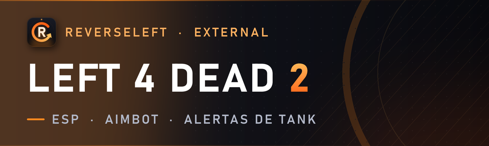
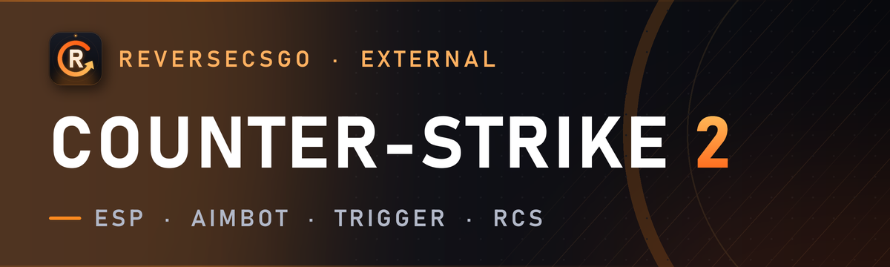
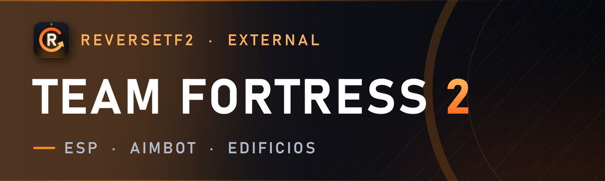
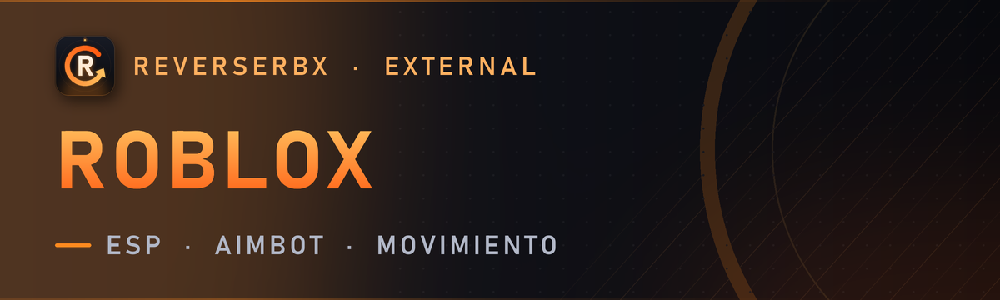
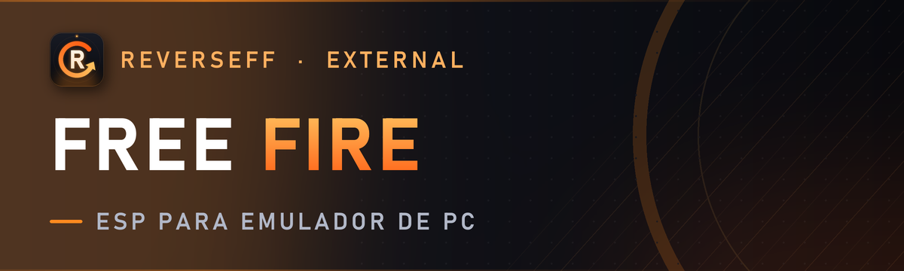
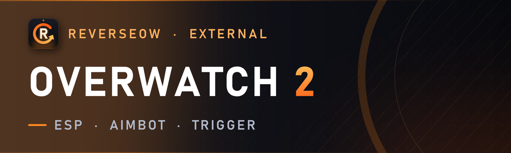
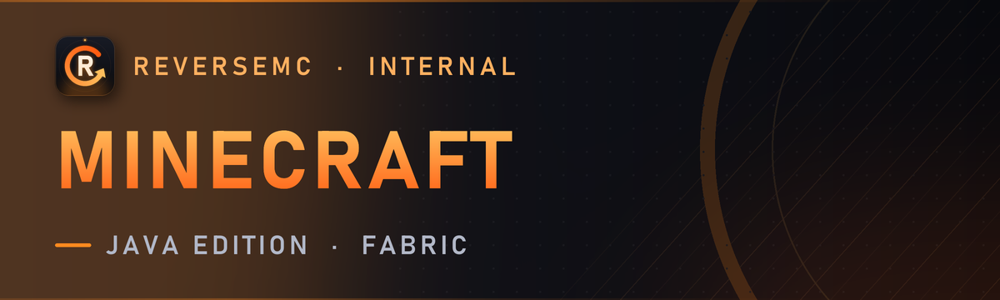
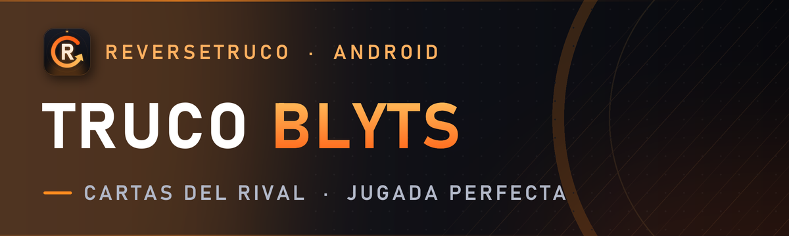

ESP, aimbot y herramientas para tus juegos
ReverseCraft desarrolla software para videojuegos de PC y Android: ESP, aimbot, triggerbot, radar y más, con menú propio, updates automáticos y soporte real. Las herramientas de PC son externas: corren fuera del juego y solo leen su memoria.
Productos y precios
Precios en dólares (USD). Cada licencia es para 1 PC o 1 dispositivo.

Left 4 Dead 2
ESP & Aimbot · v1.3.3 · Prueba gratis de 1 día
ESP y aimbot para Left 4 Dead 2: ves cada especial, Tank y Witch a través de las paredes.
- 🎯 Aimbot · legit o rage, predicción, solo visibles
- 👁️ ESP · especiales, Tank, Witch y comunes, con vida y arma
- ⚠️ Alertas · Tank, Witch cerca y compañeros atrapados
- 🧟 Infectado · timer de habilidad y habilidad automática
- 🏃 Extras · bhop, empujón automático, items con filtros
- 🛡️ Seguro · externo, invisible en OBS y Discord, tecla de pánico

Counter-Strike 2
ESP & Aimbot · v1.5.5 · Prueba gratis de 1 día
ESP y aimbot para Counter-Strike 2: ves a todos a través de las paredes y apuntas con una tecla.
- 🎯 Aimbot legit · por arma, predicción, solo visibles
- 🔫 Trigger y RCS · triggerbot, control de retroceso, bhop
- 👁️ ESP completo · cajas, esqueleto, vida, arma, pasos
- 💣 Bomba · timer, sitio y si llegas a desactivar
- 🌍 Mundo · glow, radar, modo noche, color de cielo, FOV
- 🛡️ Seguro · externo, invisible en OBS y Discord, tecla de pánico

Team Fortress 2
ESP & Aimbot · v1.2.2 · Prueba gratis de 1 día
ESP y aimbot para Team Fortress 2: enemigos, edificios y proyectiles a través de las paredes.
- 🎯 Aimbot · legit o rage, solo hitscan, apunta a sentries
- 👁️ ESP · clase, vida, nombre real, esqueleto
- 🕵️ Indicadores · invisibles, disfrazados, Über y carga del Medic
- 🏗️ Mundo · edificios con nivel, cohetes, stickies, botiquines
- 🧠 Inteligente · ignora Über y Bonk, se pausa en los menús
- 🛡️ Seguro · externo, invisible en OBS y Discord, tecla de pánico

Roblox
ESP & Aimbot · v1.0.14 · Prueba gratis de 1 día
ESP, aimbot y movimiento para Roblox: funciona en cualquier experiencia, también en 3ª persona.
- 🎯 Aimbot · predicción en el aire, curvas suaves, modo humano
- 🔫 Trigger y RCS · toques o mantener, control de retroceso
- 👁️ ESP · esqueleto R15/R6, vida, item, chequeo de paredes
- 👥 Equipos · Rivals, Tribus y roles de Murder Mystery 2
- 📦 ESP a medida · marca cofres, monedas o armas por nombre
- 🏃 Movimiento · bhop, auto sprint, macros, anti-AFK

Free Fire
ESP · v1.0.1 · Prueba gratis de 1 día
ESP para Free Fire en emulador de PC. Solo lee el juego, no lo toca: tu cuenta y tus FPS quedan intactos.
- 👁️ ESP · cajas, esqueleto, línea, nick, vida, distancia
- 👥 Escuadra · tus compañeros en otro color, caídos en gris
- ⚠️ Alertas · sonido cuando se acerca un enemigo
- 📡 Radar 2D y contador de enemigos
- 📱 Emuladores · MSI App Player y BlueStacks 5
- ⚡ Liviano · overlay a 60/45/30 FPS, el emulador no se traba

Overwatch 2
ESP & Aimbot · v1.1.2 · Prueba gratis de 1 día
ESP y aimbot para Overwatch 2: ves cada héroe con su vida y el aim se adapta al héroe que juegas.
- 🎯 Aimbot · legit y suave, solo visibles
- 🧮 Predicción · detecta proyectil o hitscan solo
- 🦸 Por héroe · cada uno con su FOV, suavizado y trigger
- 🧠 Scripts · Recall, Wraith, Deflect, Fade y más automáticos
- 👁️ ESP · héroe, vida, esqueleto, chequeo de paredes
- 🛡️ Seguro · externo, no se inyecta en el juego

Minecraft
Utility client (combat, movement, render) · v0.2.9 · Prueba gratis de 1 día
Aimbot, ESP y más para Minecraft Java: jugadores, cofres e items a través de las paredes, en servidores de cualquier versión.
- 🎯 Combate · aimbot, silent aim, triggerbot, autoclicker
- 🛡️ Anti-knockback y CPS aleatorios
- 👁️ ESP · cajas, vida, nombre, item en mano
- 🌍 Mundo · cofres, shulkers, spawners e items con glow
- 🏃 Movimiento · safe walk y auto sprint
- 🌐 Cualquier versión · entra a servidores viejos y nuevos

Truco Blyts
Card reader and play assistant · v1.0.4 · Prueba gratis de 1 día
Las cartas del rival y la jugada perfecta en Truco Blyts, en tu celular y sin root. Único en el mercado.
- 🃏 Cartas del rival · apenas se reparten
- 🧠 Jugada perfecta · qué tirar y si el truco está ganado
- 🎯 Envido y flor · del rival, y si te conviene querer
- 👥 2 vs 2 y 3 vs 3 · cartas del compañero y envido por equipo
- 📺 Modo stream · vos lo ves, la transmisión no
- 📱 Sin root · Android 7 a 16, celular o emulador
Left 4 Dead 2 · Kernel
ESP & Aimbot · v2.0.0 Ring 0 · Solo de pago
Suite 100% Nivel Kernel (Ring 0) para Left 4 Dead 2 diseñada desde cero para máxima seguridad, lectura directa desde el proceso `System` y cero exposición en modo usuario.
- 🎯 Aimbot + Triggerbot — Legit humanizado o Agresivo, FOV dinámico, predicción, visibilidad BSP y Triggerbot con retardo configurable
- 👁️ ESP Completo — Supervivientes, Especiales, Tank, Witch, comunes y objetos (armas, botiquines, arrojables) con cajas 2D/3D, esqueleto, vida y armas
- 🧟 Modo Infectado + Superviviente — Cazador de aislados, aviso si te miran, daño de salto del Hunter, Auto-Habilidad, Auto-Shove y BunnyHop
- 🚨 Alertas Inteligentes — Aviso visual y sonoro instantáneo de Tank, Witch cercana y compañeros atrapados
- ⚙️ Cómo funciona ahora (100% Automático)
Cómo comprar
- Elige el producto y el plan.
- Paga con el link de pago (tarjeta o medio local de tu país) o por ticket en nuestro Discord.
- Recibes tu licencia (key) en minutos. Abres la app, pegas la key y listo: se actualiza sola.
Requisitos
Windows 10/11 de 64 bits para los productos de PC. Android 7 o superior para los productos móviles. Conexión a internet para validar la licencia.